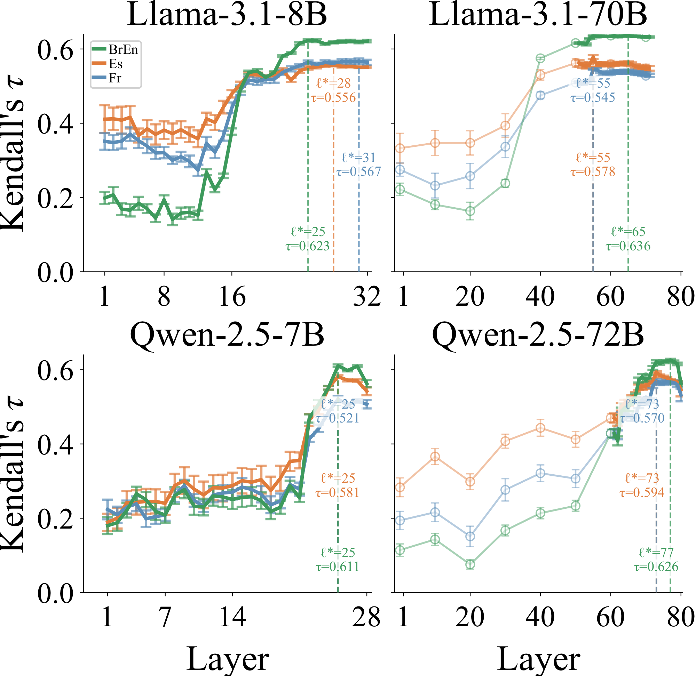
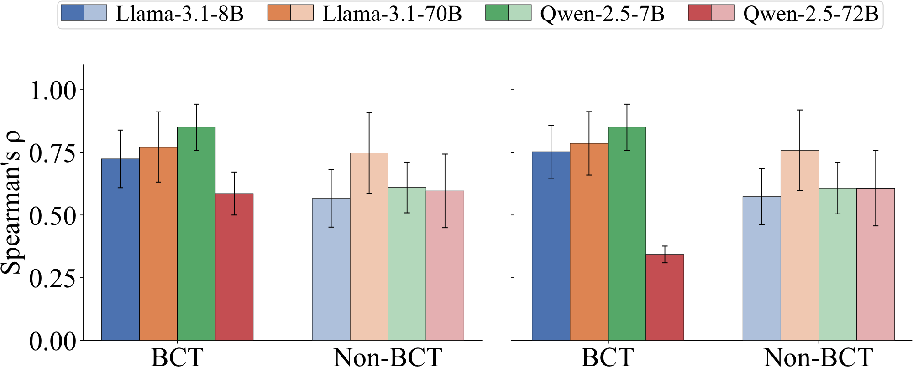

How LLM Representations Align with Human Colour-Naming Geometry
Chromatic terms at the CAM16-UCS hue angle of their focal colour (0° on +a′, counter-clockwise), as in Figure 1 of the paper. Radius carries no information; thick outlines mark basic colour terms.
In one sentenceThe hidden-state geometry of model-generated lexical neighbourhoods aligns with human colour-naming similarity in upper layers, across two model families, two scales and three languages, and partially recovers the hue circle, most stably for basic colour terms.
Colour provides a controlled domain for testing whether text-only language models recover structure derived from human colour perception without direct visual grounding. Colour naming data mapped onto a well-characterised perceptual space provide empirical estimates of colour-category similarity. We ask whether language models encode not only direct colour-word associations but also human colour-naming geometry. We study compact colour lexicons for British English (32 terms), Spanish (31), and French (27), extracting layer-wise hidden states from instruction-tuned Llama-3.1 and Qwen-2.5 models at 7–8B and 70–72B scales. For each term, models generate five related colour names (lexical neighbours), whose token-level hidden states are averaged into a lexical-neighbourhood centroid.
Representational Similarity Analysis against human-derived similarity matrices shows consistent upper-layer alignment. Label-permutation and cross-colour scrambling controls show that this alignment depends on the correct colour-term correspondence. Multidimensional scaling and Procrustes alignment show partial recovery of hue-circle geometry. Basic colour terms show stronger global alignment and more stable circular ordering, while non-basic terms retain weaker but structured hue relations. Hue-sorting probes provide complementary evidence that the recovered structure is partly accessible in model outputs. Overall, the hidden-state geometry of model-generated lexical neighbourhoods partially recovers human colour-naming geometry, which is itself grounded in perceptual colour space.
We sample each model's lexical neighbourhood around a colour term, then compare the geometry of the resulting representations with human colour naming and with the hue circle.
For each colour term, the model generates five related colour names. Their hidden states are averaged into a lexical-neighbourhood centroid at every layer.
Model similarity (Pearson, mean-centred centroids) is compared with human similarity (1 − √JSD of naming distributions) using Kendall's τ.
At the best layer ℓ*, classical MDS and Procrustes alignment test recovery of the CAM16-UCS hue circle, for basic and non-basic terms separately.
A behavioural probe asks models to sort colour terms in circular hue order, testing whether the structure is accessible in outputs.
Hidden states were extracted through NDIF. Human data come from unconstrained online colour naming, where participants freely name colour stimuli sampled across perceptual colour space.

Permuting colour labels, or rebuilding centroids from names generated for other colours, reduces RSA to chance.
Centroids align more strongly than static fastText embeddings and, for Llama-3.1-8B, than the target term's own representation.
The peak layer is unchanged with cosine instead of Pearson similarity and, for Llama-3.1-8B, across alternative human-similarity measures and RSA statistics; base and instruction-tuned Llama-3.1-8B reach comparable peaks.
At each model's best layer ℓ*, MDS and Procrustes alignment place every colour term at a recovered hue. Switch to Model to see which terms move away from their reference position, and where to. This reproduces the circular-displacement figures of the paper (Figure 3 and its Spanish and French counterparts in the appendix) for every language, model and term group.
View
Language
Model
Terms
Displaced terms
Dashed circles: reference hue (human focal colour). Filled: model-recovered hue after Procrustes alignment. Arrows are drawn only for terms whose circular rank changes. Metrics are Table 1 values at ℓ*.
Lower Procrustes disparity means stronger global alignment, higher hue τ means better-preserved relative hue distances, and lower circular displacement (CD, rank positions) means more stable circular ordering.
| Basic colour terms | Non-basic colour terms | |||||
|---|---|---|---|---|---|---|
| Model | Disp. ↓ | Hue τ ↑ | CD ↓ | Disp. ↓ | Hue τ ↑ | CD ↓ |
Best per column within each language.

The perceptual grounding in this design lies in the human reference data. Alignment shows that model representations recover geometry correlated with human colour-naming structure, not that LLMs encode perceptual colour space as humans do. See the paper for all controls, baselines and limitations.
@inproceedings{ahmed2027words,
title = {From Words to Hues: How LLM Representations Align with Human Colour-Naming Geometry},
author = {Ahmed, Rafique and Mylonas, Dimitris and Masala, Giovanni Luca and Koliousis, Alexandros},
booktitle = {Proceedings of the 2027 Conference of the European Chapter of the Association for Computational Linguistics (EACL)},
year = {2027}
}